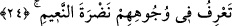

Âyette anlatılan nimet içindeki kimseler, bu tahtlardan, gözlerinin alabildiğince
diledikleri Cennet manzarasına ve Allah Teâlâ’nın kendilerine vermiş olduğu nimete ve
ikramlara bakar dururlar. Bakmaktan mutlu olacakları güzel sûretler ile ferahlatıcı
şeylere nazar ederler.
Onlar ayrıca Cehennemde azap gören kendi düşmanlarına da bakarlar. İçinde
oldukları gelin odası yapısındaki süslü köşe, onların gözlerini bunları idrak etmekten
engellemez. Çünkü o odanın perdeleri latif ve şeffaftır. Bu âyet-i kerimede onların neye
baktıkları belirtilmemiştir. Bunun sebebi ifâdeye genellik anlamı katmak içindir. Bir
başka ifâdeyle; herşeye bakacaklarını vurgulamak içindir. Bu âyette “ale’l-
erâiki/koltuklar üzerinde” ifâdesinin önceden getirilmesi âyet sonlarındaki ses uyumunu
sağlamak içindir. “Yenzurun/bakarlar” fiilinin başlangıç cümlesi olması mümkün olduğu
gibi hal olması da mümkündür.
İbn Ata (rh.) bu âyeti şöyle tefsir eder: Onlar ma’rifet tahtları üzerinde Ma’rûf’a,
kurbet tahtları üzerinde Raûf’a bakarlar.
Bu âyet-i kerimede makamât-ı âliye erbabına, onların varlığın bütün mertebelerine
bakacaklarına ve onları bu mütâlalarından hiçbir şeyin mahrum etmeyeceğine işâret
vardır. Oysa ağyar böyle değildir. Çünkü ağyâr, melekut ehlinin ahvalini bilmekten
mahrumdur. Öte yandan bu âyet-i kerimede derece ehlinden her derecenin esma ve
sıfattan özel bir bahçesi olacağına ve oradan bakacaklarına; içlerinden kiminin yüksek,
kiminin daha yüksek derecelerde bulunacaklarına; bütün mertebelere bakmanın sâdece
eşrefu’l-eşrefe; yâni kutbu’l-aktaba âid olduğuna işâret vardır.
24. Onların yüzünde nimetlerin sevincini görürsün.
Bu âyet-i kerime onların erecekleri nimetin ikinci vasfını bildirmektedir. Buna göre
âyetin mânâsı şöyledir: “Sen onların yüzünde nimetlenmenin parlaklık ve güzelliğini
farkedersin.” Bir başka ifâdeyle; sen onları gördüğünde yüzlerinde gülümseme ve
parlaklık gibi nimetlendiklerine işâret karineler dolayısıyla nimet ehli kimseler
olduklarını farkedersin. Tıpkı bu dünyada zengin ve refah içerisinde yaşayanların
yüzlerinde bu alâmetleri görüp farkettiğin gibi.
İşte bunlardan dolayı âyette “görürsün” anlamındaki “terâ” fiili değil de “farkedersin”
anlamındaki “ta’rifu” fiili tercih olunmuştur. Çünkü “farketmek” anlamına gelen
“mârifet”, çoğunlukla gizliliklerle ilgili bir kavram iken “görmek” çoğunlukla açıkta
olan şeylerle ilgilidir.
Âyetteki “farkedersin” hitabı, bu hitabtan nasibi olan herkesedir. Böylece işâret
edilmek isteniyor ki; onların üzerlerinde nimetin izleri ve refahın alâmetleri olacaktır.
Bunlar bir kısım insanların görüp de bir kısmının göremeyeceği şekilde de